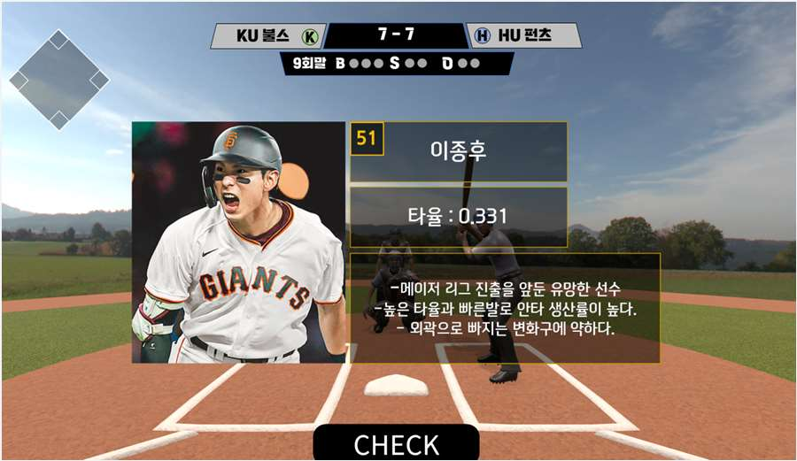
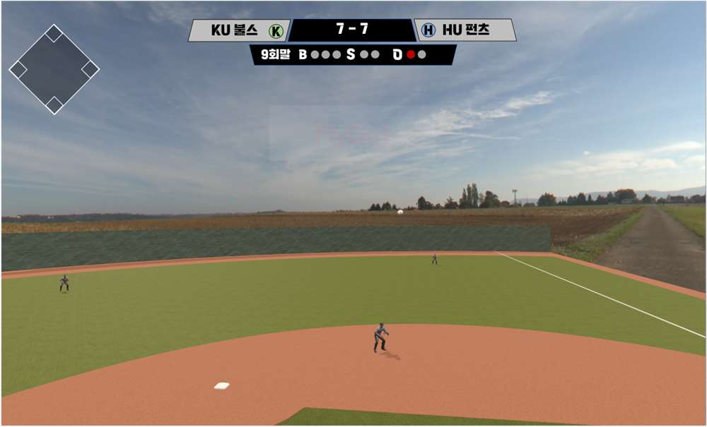

타자 정보와 게임 화면의 확장
타자 정보에서 사인 선택으로

선수의 특징과 타율을 화면에 표시해, 사용자가 정보를 보고 적절한 구종과 위치를 추론하도록 구성했다.
입력한 제스처 데이터에 따라 타격 확률이 달라지도록 수정했다.
투구 이후의 게임 표현

변화구의 궤적과 공이 날아가는 장면을 추가했다.
출루한 주자에 따른 베이스 현황과 아웃 카운트 등 UI를 추가했다.
기초 기획과 제스처 인식·전송부는 본인 담당이며, 화면 구성과 피칭·타격 등 Unity 게임 구현은 팀원이 담당했다. 위 이미지는 팀 구현 결과를 담은 발표자료 원본이다.